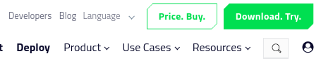
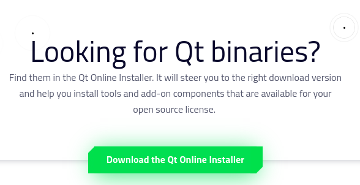
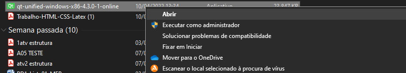
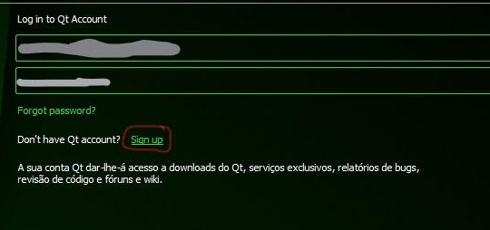
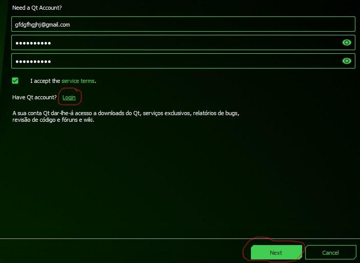
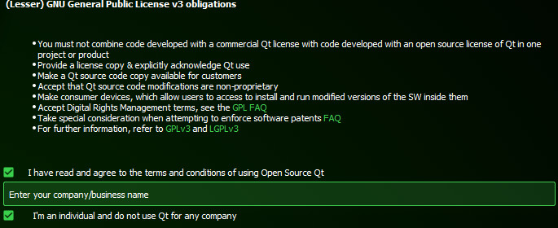
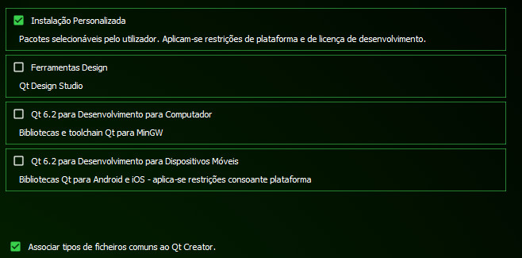
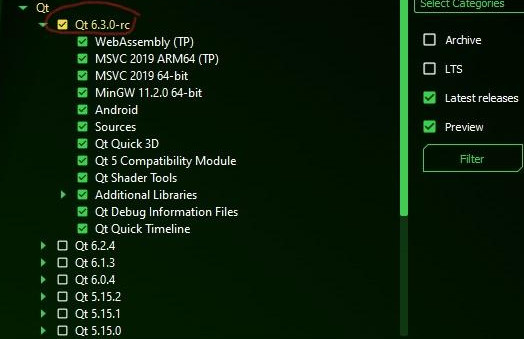
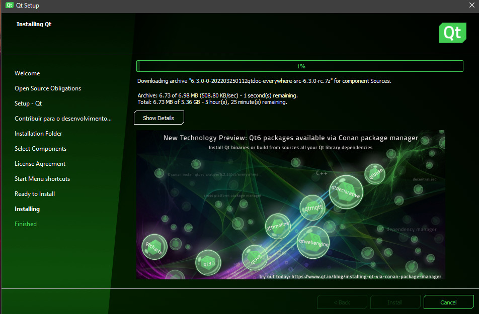

Download e Instalação do Qt Creator no Windows
Primeiro, para baixar o Qt Creator no Windows, entre no site do Qt. Em seguida, no site, clique no botão que está no canto superior direito da tela chamado Download. Try. (experimentar download)
Você será direcionado a outra página e deverá rolar ela até chegar em Downloads for open source users (downloads para usuários de código aberto), depois clique em go open source (código aberto)

Entrará em outra página e deverá rolar a página até Looking for Qt binaries? (Procurando por binários Qt?) e clique em Download the Qt Online Installer (Baixe o Instalador de Qt online)
O sistema operacional que você está usando será identificado, para instalar apenas clique em Download.
Após o Download...
Procure o arquivo que foi baixado nos arquivos do dispositivo:
Para iniciar é necessário uma conta, então ao clicar em sign up você será direcionado para criar sua conta:
Coloque seu email e crie uma senha, chegará um email de confirmação da conta. Após isso será possível fazer login. Para seguir clique em next depois de finalizar cada página:
Após informar o e-mail e senha cadastrado, é necessário concordar com os Termos e Condições de uso. Selecione que é uma pessoa física e não usa o Qt para nenhuma empresa:
Na seção Installation Folder, selecione Instalação Personalizada. Recomendamos não alterar o diretório em que o Qt será instalado.
Logo depois, clique em Qt e selecione a primeira opção de versão:
Depois concorde com os termos de uso e na seção Start Menu shortcuts deixe selecionado Qt. Em seguida, na seção Ready to Install informará que está pronto para começar a instalar o Qt e mostrará o quanto de memória utilizará (se estiver muito pesado, volte até a escolha de versão na seção Select Components e desmarque os componenentes que não terão uso para você), se estiver tudo certo clique em Install e a instalação irá iniciar. Esta é a tela de instalação:
